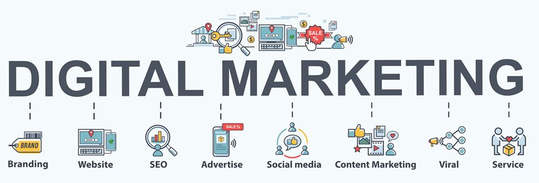

Soluções de web:
Temos as mais diversas soluções de Web para seu negocio, confira com detalhes:
- Início:
Nossa metodologia de trabalho, vai desde da elaboração do protótipo do seu site, app ou ecommerce, ou seja, coletamos todas as necessidades e ideias do seu negócio, fazemos um protótipo, mediante a aprovação do cliente damos inicio ao processo de desenvolvimento do projeto, até a implantação, registro de domínio e hospedagem na internert. Todos nossos projetos, damos um mês de manutenção gratuita, no pós-implantação. Depois, do projeto pronto, devidamente registrado e hospedado na rede, prestamos também, assessoria em marketing digital, otimizando seu site nas pesquisas do SEO do Google, tanto no tráfego organico, quanto no tráfego pago.
- Nossos Serviços:
- Designer de interfaces em UX/UI;
- Desenvolvolvimento de Sites | Landing Pages | Ecommerces;
- Marketing Digital e Otimização de sites no SEO.
- ferramentas e linguagens:
-Elaboração de protótipos Ux/Ui: Figma;
- Desenvolvolvimento de Sites | Landing Pages: Html, Css, Css Grid e flexbox, JavaScript, frameworks design Bootstrap, Bulma;
- Desenvolvolvimento de ecommerces web: Ruby On Rails;
- Marketing Digital: Trabalhamos com o tráfego orgânico e Pago, Otimização de sites no SEO, Google Analitics, assessoria em redes sociais.
- Fluxo do Marketing Digital:
Tire suas dúvidas aqui !
Designer Ux/Ui:
Sites:
Seu site é a porta de entrada para o sucesso online, atravês dele você transforma leads em contatos, depois em vendas reais para sua empresa.
Algumas estratégias que influenciam o algoritmo dos buscadores, para coloca em listas de prioridades os melhores resultados para a pesquisa dos usuários.
1- Ter um bom site publicado, principalente um site responsivo, pois, o algoritmoleva em consideração.
2- Oferecer os serviços que os clientes mais buscam
3- Cumprir os requisitos para aparecer no Google, esse requisitos é um trabalho que é feito junto com o time desenvolvimento, para que seu site esteja com as palavras-chaves certas para ser localizado.
4- Publicar textos, artigos informativos com propriedade a respeito de algum tema ou contêudo.
Ecommerces:
O comércio eletrônico, ou e-commerce, é a compra e venda de produtos ou serviços através da internet. O e-commerce funciona através de uma loja virtual, onde os consumidores podem escolher itens, realizar pagamentos e receber as suas compras sem sair de casa.
O e-commerce permite que as empresas vendam produtos e serviços diretamente aos consumidores, a outras empresas ou até mesmo ao governo, através de sites, aplicações e plataformas integradas. O e-commerce também conta com serviços de pagamento online, integrações com vários marketplaces e redes sociais.
O e-commerce tem vários diferenciais, como a ausência de barreiras geográficas, que permite alcançar clientes de qualquer lugar do mundo através da internet. A logística, cada vez mais avançada, também torna possível a entrega de produtos em locais mais distantes.
Para empreender no e-commerce, é preciso utilizar um canal de vendas online, como uma loja virtual, um marketplace ou as redes sociais. Cada canal tem as suas vantagens e desvantagens, e o empreendedor deve escolher o que fizer mais sentido para o seu negócio e para o seu público-alvo.
Marketing Digital:
1- Ter um bom site publicado, principalente um site responsivo, pois, o algoritmoleva em consideração.
2- Oferecer os serviços que os clientes mais buscam
3- Cumprir os requisitos para aparecer no Google, esse requisitos é um trabalho que é feito junto com o time desenvolvimento, para que seu site esteja com as palavras-chaves certas para ser localizado.
4- Publicar textos, artigos informativos com propriedade a respeito de algum tema ou contêudo.